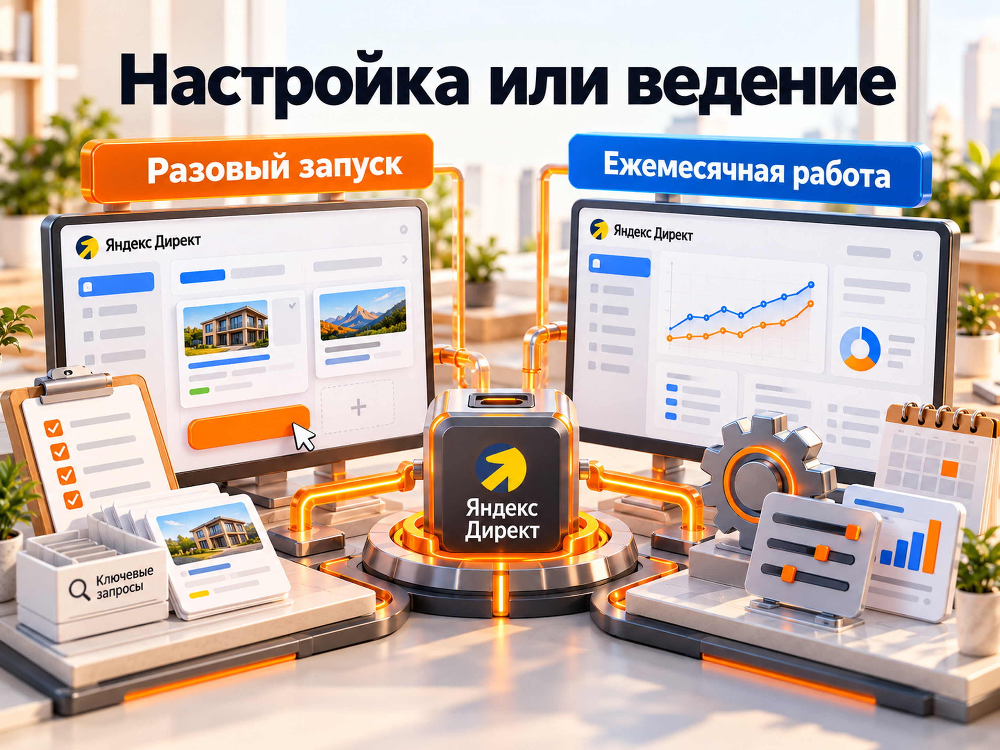

Блог о платном трафике
Стоимость услуг директолога: сколько стоит настройка и ведение Яндекс Директ
Стоимость услуг директолога в 2026 году зависит от того, нужна ли разовая настройка рекламы или постоянное ведение. По исследованию открытых предложений специалистов Яндекс Рекламы, медианная стартовая цена настройки составляет 25 000 ₽, ведения - также 25 000 ₽ в месяц. При этом сложные проекты могут стоить значительно дороже.
Я занимаюсь настройкой и ведением Яндекс Директа более 10 лет. Стоимость моей работы начинается от 30 000 ₽ в месяц. Рекламный бюджет оплачивается отдельно.
Главное при выборе директолога - сравнивать не только цену, но и объём работы. Настроить одну кампанию по готовому шаблону и выстроить рекламу с аналитикой, оптимизацией и контролем качества заявок - разные услуги.
Сколько стоят услуги директолога в 2026 году
В сентябре 2026 года сервис Tapbox проанализировал стартовые цены в 303 карточках каталога специалистов Яндекс Рекламы. Получились следующие ориентиры:
| Услуга | Центральные 50% предложений | Медианная стартовая цена |
|---|---|---|
| Разовая настройка Яндекс Директ | 15 000‑30 000 ₽ | 25 000 ₽ |
| Ведение Яндекс Директ | 17 000‑30 000 ₽/мес. | 25 000 ₽/мес. |
| Платный аудит | 2875‑6000 ₽ | Зависит от объёма проверки |
Это срез предложений на 26 сентября 2026 года, а не средние цены по всему рынку. Исследование показывает заявленную стартовую стоимость, а не фактические суммы заключённых договоров.
В образовательных материалах Яндекс Реклама также приводит широкий диапазон: от 4000 до 85 000 ₽ за запуск одной рекламной кампании. Но этот ориентир не означает, что за любую сумму из диапазона заказчик получает одинаковую услугу.
Низкие стартовые цены часто предполагают ограниченный перечень задач. Комплексная работа с несколькими рекламными направлениями, аналитикой и сложными воронками может стоить существенно дороже.
Поэтому перед сравнением прайсов нужно определить, за какой результат и какой объём работы вы платите.
За какие услуги платят директологу
Работу с Яндекс Директом можно разделить на несколько самостоятельных услуг.
| Услуга | Что входит | Формат оплаты |
|---|---|---|
| Настройка рекламы | Подготовка кампаний, объявлений, аудиторий, целей и запуск | Обычно разовая |
| Ведение рекламы | Анализ статистики, оптимизация, тестирование и развитие кампаний | Ежемесячная |
| Аудит | Проверка существующих кампаний, поиск ошибок и неэффективных расходов | Обычно разовая |
| Настройка аналитики | Метрика, цели, коллтрекинг, CRM, передача конверсий | По составу работ |
| Консультация | Разбор вопросов и рекомендации по рекламному проекту | Разовая или почасовая |

Часть услуг может входить в комплексное предложение.
Например, один специалист включает первичную настройку и аналитику в стоимость первого месяца ведения. Другой выставляет отдельный счёт за запуск, а дальнейшее сопровождение оплачивается ежемесячно.
Поэтому предложение «Яндекс Директ под ключ за 30 000 ₽» необходимо расшифровать: это разовая настройка или полноценная работа с рекламой на протяжении месяца?
Сколько стоит настройка Яндекс Директ
Разовая настройка Яндекс Директа в опубликованной выборке специалистов имела медианную стартовую цену 25 000 ₽. Конкретная стоимость зависит от количества направлений, рекламных форматов и сложности подготовки проекта.
В полноценную настройку обычно входят:
- Анализ бизнеса, продукта и конкурентов.
- Проверка сайта и посадочных страниц.
- Подбор поисковых запросов и аудиторий.
- Подготовка структуры рекламных кампаний.
- Создание объявлений и рекламных изображений.
- Настройка Яндекс Метрики и целей.
- Выбор рекламных стратегий и бюджетов.
- Запуск и проверка корректности работы рекламы.
Однако далеко не каждый проект требует одинакового набора действий.
Например, для одной локальной услуги может быть достаточно небольшого количества кампаний. Интернет-магазину с большим ассортиментом дополнительно могут потребоваться товарный фид, каталог, электронная коммерция и более сложная аналитика.
Нужно также заранее согласовать, входит ли в цену исправление ошибок после запуска и первоначальная оптимизация.
Разовая настройка заканчивается выполнением согласованного перечня работ. Она не обязательно включает постоянное управление рекламой.
Подробнее о составе работ и ценах я рассказал в статье о стоимости настройки Яндекс Директ.
Сколько стоит директолог в месяц
Ежемесячное ведение Яндекс Директа в исследованной выборке имело медианную стартовую цену 25 000 ₽. При этом стоимость сопровождения сложных рекламных проектов может быть значительно выше.
Ведение начинается после запуска рекламы и продолжается в течение согласованного периода.
Специалист регулярно анализирует:
- расход рекламного бюджета;
- количество и стоимость заявок;
- поисковые запросы и нецелевой трафик;
- площадки РСЯ;
- эффективность объявлений и креативов;
- работу автоматических стратегий;
- распределение бюджета между кампаниями;
- качество обращений и дальнейшие продажи.
По мере накопления статистики директолог проверяет гипотезы, меняет настройки и определяет, какие рекламные направления стоит развивать.
Особенно важна аналитика после запуска. В первые дни рекламная кампания может собирать данные, которых недостаточно для уверенных выводов. Дальнейшая оптимизация помогает оценивать не только клики, но и реальные обращения.
В моей практике приоритетом являются заявки, их качество и стоимость привлечения. Если реклама приводит дешёвые, но нецелевые обращения, такой результат нельзя считать эффективным только из-за низкого CPL.
Моя стоимость ведения Яндекс Директа начинается от 30 000 ₽ в месяц. Точная сумма определяется после оценки проекта.
Подробный разбор оплаты сопровождения есть в отдельной статье о цене ведения Яндекс Директ.
От чего зависит стоимость услуг директолога
На стоимость работы влияет не только количество рекламных кампаний. Важнее общий объём задач, сложность аналитики и необходимость постоянной оптимизации.
Количество товаров и направлений
Продвижение одной услуги в одном городе обычно требует меньше работы, чем реклама компании с десятью самостоятельными направлениями.
Для разных продуктов могут потребоваться собственные объявления, аудитории, посадочные страницы и отдельная оценка эффективности.
При этом больше кампаний не всегда означает более качественную рекламу. Иногда правильнее объединять направления, чтобы не дробить статистику.
География продвижения
Работа с несколькими регионами может потребовать разделения рекламных кампаний, анализа локального спроса и корректировки предложений.
Но само количество городов не должно автоматически увеличивать стоимость. Нужно оценивать, насколько география действительно усложняет управление рекламой.
Сложность ниши и воронки продаж
В некоторых нишах результат рекламы можно оценить по заказам на сайте.
В B2B, недвижимости и промышленности между обращением и продажей могут проходить недели или месяцы.
Здесь важно отслеживать не только заявки, но и дальнейшее движение клиента: квалификацию, переговоры, коммерческие предложения и сделки.
Такая работа требует более глубокой аналитики.
Состояние существующей рекламы
Если рекламный кабинет уже работает, специалисту нужно изучить его структуру, настройки и накопленную статистику.
Иногда достаточно исправить несколько проблем. В других случаях требуется существенно перестроить рекламные кампании и аналитику.
Аналитика и интеграции
Для простого проекта может быть достаточно Яндекс Метрики с корректно настроенными целями.
В сложных проектах используются CRM, коллтрекинг, офлайн-конверсии и сквозная аналитика.
Важно учитывать не только первоначальную настройку этих инструментов, но и последующую проверку качества данных.
Состояние посадочной страницы
Сайт напрямую влияет на результат рекламных кампаний.
Если у бизнеса слабое предложение, неудобная мобильная версия или неработающие формы, даже качественно настроенная реклама будет терять потенциальных клиентов.
Поэтому перед запуском я проверяю посадочную страницу и основные точки конверсии. Если проблема находится на стороне сайта, увеличение рекламного бюджета её не решит.
Практический вывод: стоимость услуг директолога определяется реальной сложностью задач, а не только размером рекламного бюджета или количеством созданных объявлений.
Сколько стоит реклама с оплатой директолога
Полная стоимость работы с Яндекс Директом складывается как минимум из двух расходов: рекламного бюджета и оплаты специалиста.
Рекламный бюджет расходуется непосредственно в рекламной системе. Оплата директолога покрывает настройку, аналитику, управление и оптимизацию кампаний в пределах согласованного перечня услуг.
Пример расчёта.
Допустим, компания планирует потратить:
| Статья расходов | Сумма в месяц |
|---|---|
| Рекламный бюджет | 60 000 ₽ |
| Работа директолога | 30 000 ₽ |
| Итого | 90 000 ₽ |
Это условный пример без дополнительных расходов и применимых налогов.
Если за месяц реклама принесла 10 заявок, можно рассчитать два разных показателя:
Рекламный CPL: 60 000 / 10 = 6000 ₽ за заявку.
Полная стоимость привлечения заявки: 90 000 / 10 = 9000 ₽.
Разница существенная. В первом случае учитываются только расходы рекламного кабинета. Во втором - рекламные расходы вместе с оплатой специалиста.
Для оценки рентабельности бизнеса правильнее учитывать все затраты на привлечение клиента, а не только деньги, списанные рекламной системой.
При этом дополнительные расходы на создание сайта, коллтрекинг, CRM и другие инструменты также могут влиять на итоговую экономику.
Поэтому рекламный CPL и полную стоимость привлечения заявки не нужно путать.
Фиксированная оплата или процент от рекламного бюджета
У директологов используются три модели оплаты: фиксированная ежемесячная сумма, процент от рекламного бюджета и комбинированная схема.
| Модель | Как рассчитывается | Особенность |
|---|---|---|
| Фиксированная сумма | Согласованная цена за месяц | Предсказуемые расходы |
| Процент от бюджета | Доля рекламных расходов | Оплата растёт вместе с бюджетом |
| Комбинированная | Фиксированная часть и процент | Условия зависят от договора |
Например, при условной комиссии 10% и рекламном бюджете 200 000 ₽ оплата специалиста составит 20 000 ₽.
Если бюджет увеличится до 500 000 ₽, при той же комиссии работа будет стоить уже 50 000 ₽.
Но означает ли увеличение бюджета в 2,5 раза, что у директолога стало в 2,5 раза больше работы? Не обязательно.
Большой рекламный аккаунт может использовать относительно простую структуру. И наоборот, небольшой B2B-проект может требовать сложной аналитики, интеграций и постоянной работы с качеством лидов.
Поэтому я считаю фиксированную оплату удобным вариантом для проектов с понятным объёмом задач. Если работа существенно расширяется, условия можно пересмотреть.
Главный критерий выбора модели - соответствие оплаты реальным обязанностям специалиста.
Какие работы могут оплачиваться отдельно
Стоимость настройки и ведения рекламы не всегда включает все сопутствующие задачи.
Отдельная оплата может потребоваться за:
- разработку сайта или посадочной страницы;
- программные доработки и сложные интеграции;
- платные сервисы аналитики и коллтрекинга;
- создание большого количества рекламных материалов;
- работы с CRM и автоматизацией продаж.
Это не универсальный перечень исключений. Каждый подрядчик самостоятельно определяет состав услуги.
Перед началом сотрудничества стоит зафиксировать, что входит в стоимость и какие дополнительные работы могут появиться в процессе.
Особенно важно заранее согласовать порядок изменения цены, если увеличится количество рекламных направлений или появятся новые задачи.
Можно ли один раз настроить Директ и не платить за ведение
Да, технически рекламные кампании могут продолжать работать после первоначальной настройки без постоянного сопровождения специалиста.
Однако это не означает, что реклама будет сохранять эффективность без контроля.
Меняются запросы пользователей, активность конкурентов и структура трафика. Некоторые объявления начинают работать хуже, а отдельные аудитории или площадки перестают приносить нужный результат.
Кроме того, могут возникать проблемы с оплатой, модерацией, настройками и передачей конверсий.
Если у бизнеса есть сотрудник, который способен самостоятельно анализировать рекламу и исправлять проблемы, постоянный внешний подрядчик не всегда необходим.
Но полностью оставлять платную рекламу без контроля рискованно.
Частота проверок должна зависеть от объёма расходов, количества обращений и стабильности результата.
Как сравнить стоимость услуг разных директологов
Предложения двух специалистов можно корректно сравнить только тогда, когда понятны объём работ и условия сотрудничества.
Перед подписанием договора я рекомендую выяснить:
- Входит ли первоначальная настройка в ежемесячную стоимость?
- Какие рекламные направления и форматы будут использоваться?
- Кто непосредственно работает с рекламным кабинетом?
- Как настраивается и проверяется аналитика?
- Какие показатели используются для оценки результата?
- Как организованы оптимизация и взаимодействие с заказчиком?
- Какие дополнительные работы оплачиваются отдельно?
- Кому принадлежат рекламный кабинет и накопленная статистика?
Последний вопрос особенно важен.
Рекламные кампании и статистика представляют ценность для бизнеса. При смене подрядчика желательно сохранить доступ к накопленным данным, настройкам и результатам предыдущей работы.
Также стоит учитывать опыт специалиста в похожих проектах.
Например, работа с интернет-магазином и реклама промышленного оборудования требуют разных подходов к структуре кампаний и оценке результата.
Дешёвый подрядчик не обязательно окажется экономически выгоднее. Более дорогой специалист также не гарантирует лучшие показатели.
Сравнивать предложения нужно по составу работы, качеству аналитики, прозрачности процессов и результатам, которые можно проверить.
Сколько стоят мои услуги директолога
Я занимаюсь платным трафиком с 2014 года. Работаю с Яндекс Директом, аналитикой, рекламными воронками и привлечением клиентов для бизнеса.
Стоимость моей работы начинается от 30 000 ₽ в месяц. Рекламный бюджет оплачивается отдельно.
Все проекты веду лично, без помощников и учеников. Работаю как ИП, по договору и через ЭДО.
Перед началом сотрудничества я изучаю бизнес, сайт, географию продвижения и предыдущие рекламные кампании, если они были.
После этого определяю необходимый состав работ, формат настройки и дальнейшего сопровождения.
При оценке результата смотрю прежде всего на обращения, их качество и стоимость привлечения. Там, где доступны соответствующие данные, связываю рекламные показатели с продажами.
В кейcах на сайте представлены примеры работы с B2B, недвижимостью, образованием, производством и другими направлениями.
Чтобы узнать стоимость работы для вашего проекта, можно посмотреть условия настройки и ведения Яндекс Директа.
Для предварительной оценки достаточно прислать ссылку на сайт, описание продукта, регион продвижения и ориентировочный рекламный бюджет.
Итоговая цена зависит от реальных задач. Поэтому до начала работы важно понимать не только сколько стоит директолог, но и какие конкретно действия он будет выполнять за эту сумму.